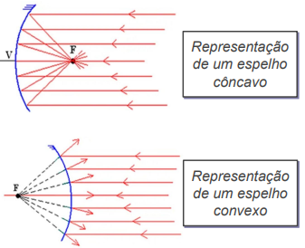
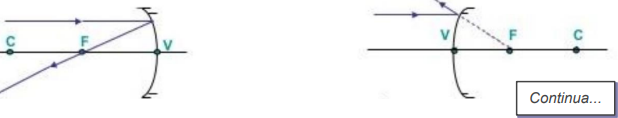
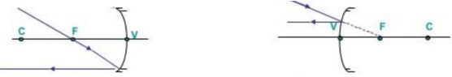

Física
22/04/2024
Luz
Luz é onda ou partícula?
- A luz se propaga em linha reta
- O raio de luz é independente
- O raio de luz sofre desvios
Um corpo que tem luz própria é chamado de corpo luminoso.
Um corpo que reflete a luz é um corpo iluminado
*Fonte primário de luz
Possui: luz "natural".
*Fonte secundária de luz
Possui: uma luz "artificial".
*Fonte extenso de luz
É possível "medir" suas dimensões.
*Fonte pontual de luz
Não possui "medir" suas dimensões.

Corpos Opacos
Corpos opacos são aqueles que refletem a luz.
Corpos translúcidos
São corpos que refletem parcialmente a luz
Corpos transparentes
São corpos que permitem a passagem da luz
29/04/2024
Refração
A refração é o fenômeno no qual a luz sofre em desvio ao passar de um
meio material para o outro.
Reflexão da luz
Da luz é o fenômeno no qual a luz é refletida ao encontrar um meio
material , retornando no seu meio de origem.
Existem 2 tipos de reflexão irregular e a difusa.
Reflexão regular .
A luz é refletida de forma regular , formando imagens .
Reflexão difusa .
A luz é refletida em diversas direções .
Absorção
Existem corpos que absorvem determinados raios da luz
Reflexão parcial
Quando temos uma reflexão parcial da luz , temos como resultado as cores
Questões:
1. Diferencie a refração da reflexão .
A refração da luz tem um desvio quando entra em contato com outro
material . Já reflexão da luz acontece quando a luz é epiletida ,
retornando para a sua origem .
2. O que é um feixe de luz?
Feixe os é um grupo de raios de luz que se propagam em uma direção
semelhante .
3. Como se formam as cores ?
As cores que vemos são formadas principalmente pela interação da luz com
objetos em nossa percepção visual .
4. Explique o que é a luz e quais as suas características
A luz é uma forma de energia eletromagnética visível ao olho humano ,
propagando se em ondas ela tem velocidade constante . Linha reta ,
reflexão e refração , interferência e difração , polarização e
comportamento dual de onda e partícula .
06/05/2024
Leis de reflexão da luz
13/05/2024
Campo visual
(Unesp) A figura a seguir representa um espelho plano, um objeto O, sua imagem I e cinco
observadores em posições distintas (A, B, C, D e E). Entre as posições indicadas, a única da qual o
observador poderá ver a imagem I é a:
20/05/2024
Reflexão da luz – Parte 4
Espelhos esféricos
Espelhos esféricos ou
gaussianos são aqueles
formados por superfícies curvas
e lisas.
Esse tipo de espelho é utilizado,
a depender da necessidade,
como ampliação da imagem ou,
ainda, ampliação do campo
visual. Pode ser classificado em:
côncavo e convexo.
Elementos geométricos

Raios notáveis
Para que imagens sejam formadas em espelhos esféricos que atendem
às condições de Gauss, é necessário o encontro de, pelo menos, dois
raios notáveis. Estes são aqueles raios característicos utilizados na
construção geométrica de imagens formadas por espelhos esféricos
1. O raio incide paralelo ao eixo principal e reflete, passando pelo
foco (F).

2. O raio que incide na direção do foco (F) e é refletido paralelamente ao
eixo principal, segundo o Princípio da Reversibilidade dos raios de luz.

3. O raio incide na direção do vértice (V) e é refletido com o mesmo
ângulo, de acordo com a Segunda Lei da Reflexão